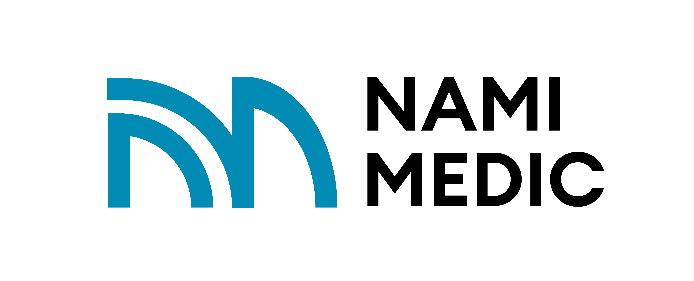

Our Services
Specialized Surgical Areas
Gynaecology
General Surgery

Orthopaedic


Medical Devices • Surgical Support • Operating Theatre Solutions
Supporting hospitals and healthcare professionals across Johor and Malaysia through medical device coordination, surgical support, operating theatre supplies, and responsive service for gynaecology, general surgery, and orthopaedic procedures.
About Company
Established in 2022 and incorporated as Nami Medic Supplies Sdn Bhd in 2023, we are a Johor-based medical device and surgical support provider assisting hospitals and healthcare professionals across Johor and Malaysia.
Our focus includes operating theatre support, medical device coordination, surgical consumables, and responsive healthcare support services for gynaecology, general surgery, orthopaedic, and related surgical procedures.
We continuously work to build trusted long-term relationships through dependable service, responsive coordination, and practical healthcare support solutions tailored to hospital operational needs.
Our Services

Why Choose Nami Medic
Based in Johor, we provide responsive coordination and dependable support for hospitals and healthcare professionals across the region.
We believe strong professional relationships and trust are essential in supporting long-term collaboration with hospitals, suppliers, and healthcare teams.
We continuously work to source reliable medical products and practical operating theatre solutions that support both clinical and operational requirements.
To support hospitals and healthcare professionals across Johor through responsive service, reliable coordination, and dependable medical and operating theatre solutions.
To grow as a trusted healthcare support partner recognized for reliability, strong professional relationships, and consistent service within the medical industry.
To continuously strengthen our service, expand our healthcare network, and support the evolving needs of hospitals and healthcare professionals across Malaysia.
Nami Team
Dedicated professionals committed to understanding client needs and delivering the best medical solutions with integrity and reliability.
Experienced and strategic leadership driving the company forward through innovation, strong planning, and operational excellence.
No. 05-17, Hub Citrine,
Sunway Citrine, Sunway Iskandar,
Persiaran Medini 3,
Bandar Medini Iskandar,
79250 Iskandar Puteri, Johor,
Malaysia
Supporting hospitals and healthcare professionals across Johor Bahru, Iskandar Puteri, Skudai, Batu Pahat, Kluang, Muar and surrounding regions in Malaysia.